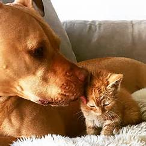

- "Pit Bulls have locking jaws."
- The jaws of the Pit Bull are functionally the same as the jaws of any other breed, and this has been proven via expert examination.
- “Pit Bulls don’t feel pain.”
- Pit Bulls have the same nervous system of any other breed, and they can and do feel pain.
- “Pit Bulls have more bite pressure per square inch (PSI) than any other breed.”
- This is not true. Test have found that other dog breeds, such as the German Shepard and Rottweiler, have a higher bite pressure PSI.
- “Pit Bulls ‘turn’ on their owners.”
- Dogs in general do not exhibit behavior "just because". Behaviors are brought on for a reason. Some possible reasons for aggression are improper handling, lack of socialization, misreading the dog, and disease.
- "Pit Bulls cannot get along with other animals"
- With proper socialization and handling, Pit Bulls can get along well with other animals. Supervision is still a good idea when introducing new animals.
